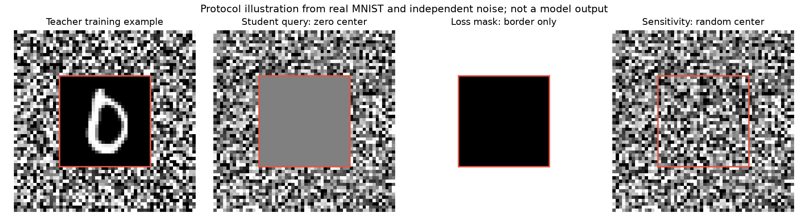
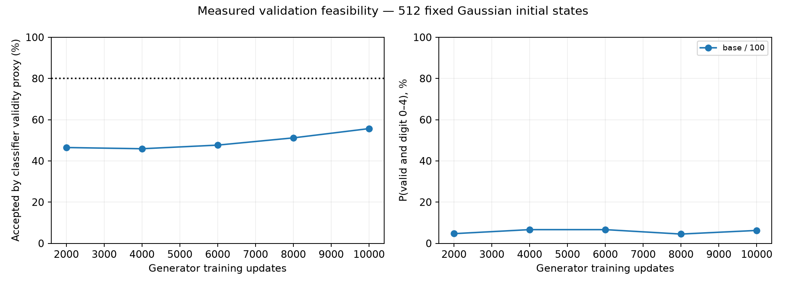
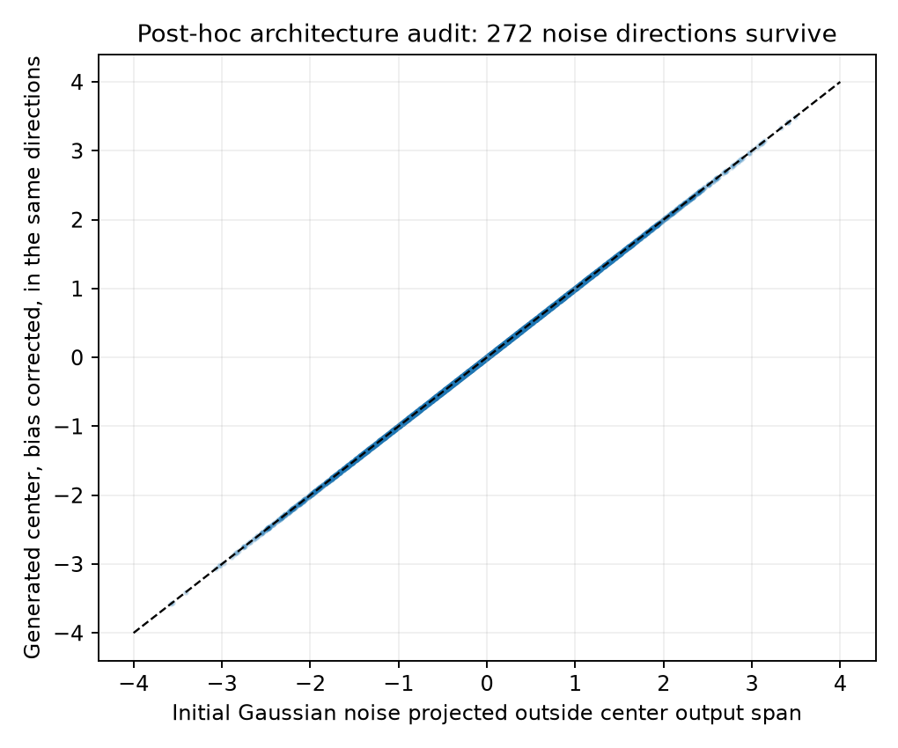
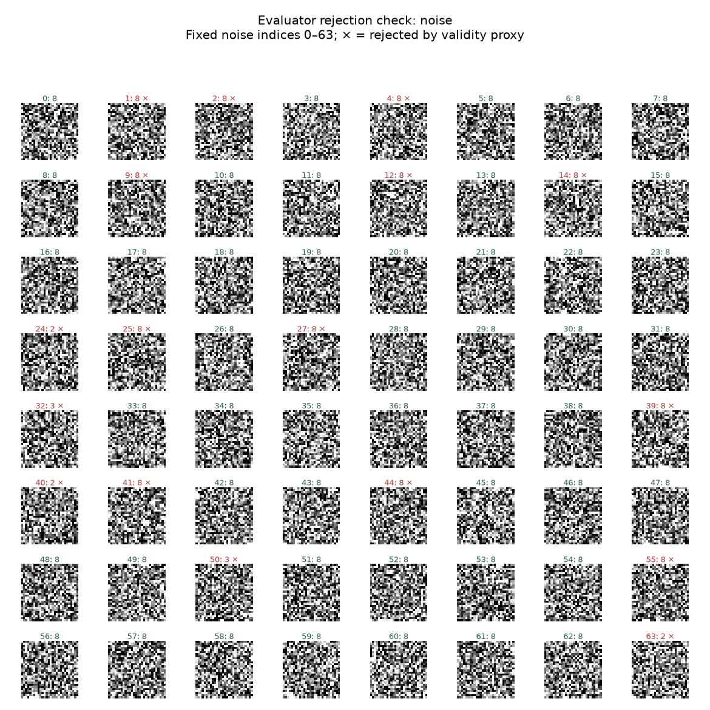

Inspect generated centers
Each selection uses 2,000 evaluation noises. Fixed indices 0–63 appear below. × marks rejection by the validity proxy.
Class frequency, including invalid outputs
Frequencies use all generated images as denominator.
SUBLIMINAL TRANSFER · FLOW PILOT · MEASURED DATA
stopped_feasibility_gate · 0.051 GPU-hours upper bound / 6-hour cap
The classifier validity proxy accepted 62.9% of pure Gaussian-noise crops. This exposes unreliable rejection of non-digits; proxy acceptance must not be read as human digit quality. Its digit-8 bias also compromises class-frequency measurements on poor samples.
Readable report · Raw JSON · CSV · Approved protocol
| Seed | Gate | Outcome |
|---|---|---|
| None | evaluator | PASS |
| 100 | base_generation | FAIL |


Not run — no measurements available.
Not run — no measurements available.
Not run — no measurements available.
The 512-dimensional output span leaves at least 272 center directions with surviving Gaussian noise. This post-hoc mathematical diagnosis is independent of the classifier.

The classifier validity proxy accepted 62.9% of pure Gaussian-noise crops. This exposes unreliable rejection of non-digits; proxy acceptance must not be read as human digit quality. Its digit-8 bias also compromises class-frequency measurements on poor samples.

Each selection uses 2,000 evaluation noises. Fixed indices 0–63 appear below. × marks rejection by the validity proxy.
Frequencies use all generated images as denominator.
Validity is a classifier-and-feature-distance proxy. Use the image grids to assess appearance. Training seeds determine replication; 2,000 images do not replace independent training runs. A failed feasibility gate is inconclusive about transfer.